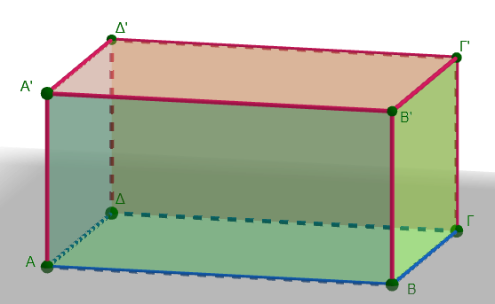
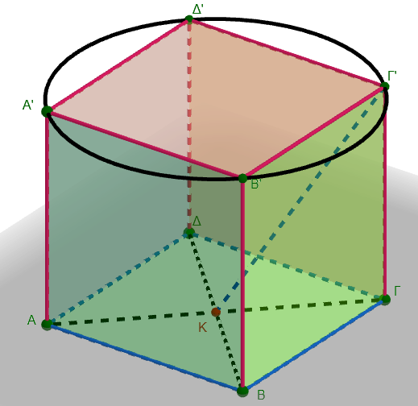
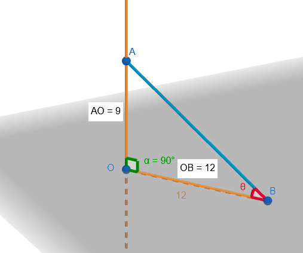
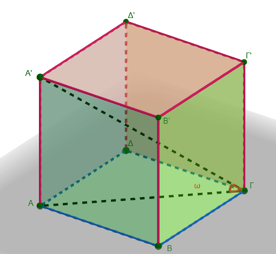
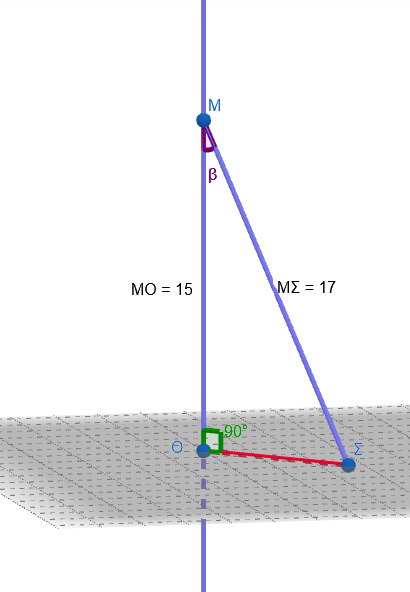
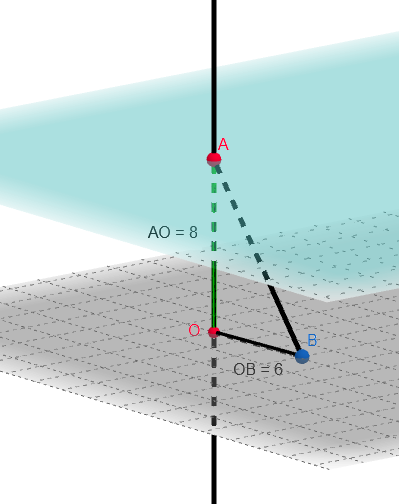
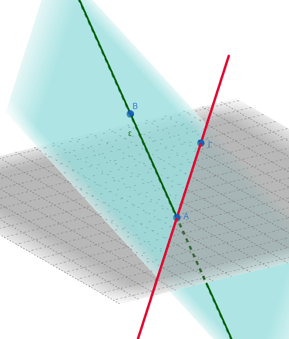
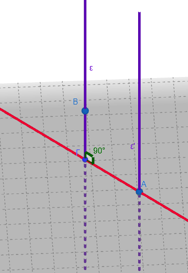
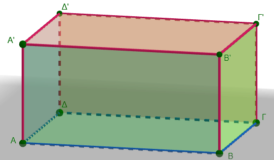
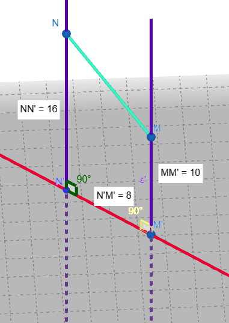

1 Ευθείες και επίπεδα στο χώρο
Στο χώρο, δύο επίπεδα μπορούν να έχουν τις εξής σχετικές θέσεις:
- Τεμνόμενα: Όταν έχουν κοινά σημεία αλλά δεν συμπίπτουν, οπότε η τομή τους είναι πάντα μια ευθεία.
- Παράλληλα: Όταν δεν έχουν κανένα κοινό σημείο. Η απόσταση δύο παραλλήλων επιπέδων ορίζεται ως το μήκος του ευθυγράμμου τμήματος που είναι κάθετο και στα δύο επίπεδα.
- Ταυτιζόμενα: Όταν συμπίπτουν πλήρως και όλα τα σημεία τους είναι κοινά.
1.1 Τεμνόμενα επίπεδα
\(p∩q=ε\)
Με δεξί κλικ πατημένο κινήστε το ποντίκι σας για να δείτε τα τεμνόμενα επίπεδα υπό διαφορετικές γωνίες.
Η ευθεία ε είναι η τομή των επιπέδων.
Μετακινήστε το σημείο Α, Β ή Γ για να αλλάξετε την θέση του p.
Μετακινήστε το σημείο Δ, Ε ή Ζ για να αλλάξετε την θέση του q.
1.2 Παράλληλα επίπεδα
p//q
Με δεξί κλικ πατημένο κινήστε το ποντίκι σας για να δείτε τα παράλληλα επίπεδα υπό διαφορετικές γωνίες.
Η ΒΓ είναι η απόσταση μεταξύ των παραλλήλων.
Μετακινήστε το σημείο Α για να αλλάξετε την θέση του παράλληλου επίπεδου q.
1.3 Ταυτιζόμενα επίπεδα
Όταν τα επίπεδα έχουν τρία κοινά σημεία τότε ταυτίζονται.
1.4 Σχετικές θέσεις δύο ευθειών στο χώρο
Στο χώρο, δύο ευθείες μπορούν να βρεθούν σε μία από τις παρακάτω τέσσερις σχετικές θέσεις:
Ταυτιζόμενες: Οι δύο ευθείες συμπίπτουν πλήρως και έχουν όλα τα σημεία τους κοινά.
Τεμνόμενες: Έχουν ακριβώς ένα κοινό σημείο και υπάρχει πάντα ένα επίπεδο στο οποίο ανήκουν υποχρεωτικά.
Μετακινήστε το σημείο Α ή Β ή Γ για να αλλάξετε την θέση των τεμνόμενων ευθειών.
- Παράλληλες: Βρίσκονται στο ίδιο επίπεδο αλλά δεν έχουν κανένα κοινό σημείο, όσο κι αν προεκταθούν.
Μετακινήστε το σημείο Α ή Β ή Γ για να αλλάξετε την θέση των παράλληλων ευθειών.
- Ασύμβατες: Αυτή η περίπτωση συμβαίνει μόνο στις τρεις διαστάσεις. Οι ασύμβατες ευθείες δεν έχουν κανένα κοινό σημείο, αλλά επιπλέον δεν ανήκουν στο ίδιο επίπεδο.
Περιστρέψτε το σύστημα συντεταγμένων (κλικ και σύρτε) για να δείτε διάφορες προοπτικές για τις ασύμβατες ευθείες.
Η απόσταση μεταξύ δύο ασύμβατων ευθειών ορίζεται ως το μήκος της κοινής καθέτου τους. Πρόκειται ουσιαστικά για το μήκος του ευθύγραμμου τμήματος που είναι κάθετο και στις δύο ευθείες ταυτόχρονα.
Αυτή η απόσταση αντιπροσωπεύει το ελάχιστο μήκος που συνδέει τα σημεία των δύο ευθειών.
1.5 Σχετικές θέσεις ευθείας και επιπέδου
Στο χώρο, μια ευθεία και ένα επίπεδο μπορούν να έχουν τις εξής σχετικές θέσεις:
- Η ευθεία ανήκει στο επίπεδο: Αυτό συμβαίνει όταν δύο σημεία της ευθείας είναι και σημεία του επιπέδου. Σε αυτή την περίπτωση, όλα τα σημεία της ευθείας περιέχονται στο επίπεδο.
- Η ευθεία είναι παράλληλη στο επίπεδο: Όταν η ευθεία δεν έχει κανένα κοινό σημείο με το επίπεδο. Αυτό συμβαίνει αν η ευθεία είναι παράλληλη προς μια άλλη ευθεία που βρίσκεται ήδη μέσα στο επίπεδο.
Πειστρέψτε το σύστημα συντεταγμένων.
Αλλάξτε την θέση των σημείων Α,Β,Γ ή Δ για να δειτε σε διφορετικές θέσεις την παράλληλη προς το επίπεδο.
- Η ευθεία τέμνει το επίπεδο: Όταν έχουν ακριβώς ένα κοινό σημείο. Μια ιδιαίτερη περίπτωση είναι η ευθεία να είναι κάθετη στο επίπεδο, οπότε το τέμνει υποχρεωτικά.
Ζ=(ΕΔ)∩(p)
Πειστρέψτε το σύστημα συντεταγμένων.
Αλλάξτε την θέση των σημείων Α,Β,Γ ή Δ,Ε για να δειτε σε διφορετικές θέσεις την τεμνόμενη με το επίπεδο.
Περίπτωση κάθετης
Η ΑΒ είναι κάθετη στο επίπεδο p στο σημείο Γ.
Η Απόσταση ΑΓ είναι και η απόσταση του σημείου Α από το επίπεδο (q).
Αλλάξτε την θέση των σημείων για να δείτε τις μεταβολές.
Η ΑΒ είναι κάθετη σε δυο τουλάχιστον ευθείες που περνάνε από το ίχνος της πάνω στο (p).
Δύο ευθείες ονομάζονται ασυμβάτως κάθετες όταν είναι ασύμβατες (δηλαδή δεν έχουν κοινό σημείο και δεν ανήκουν στο ίδιο επίπεδο) αλλά οι διευθύνσεις τους σχηματίζουν ορθή γωνία.
Πρακτικά αυτό σημαίνει ότι:
- Δεν τέμνονται και δεν είναι παράλληλες.
- Αν μεταφέρουμε τη μία παράλληλα προς τον εαυτό της μέχρι να τμήσει την άλλη, η γωνία που σχηματίζεται είναι 90°.
- Στην περίπτωση αυτή, η κοινή κάθετος των δύο ευθειών είναι το μοναδικό ευθύγραμμο τμήμα που τις συνδέει και είναι ταυτόχρονα κάθετο και στις δύο.
1.6 Ασκήσεις
- Ερωτήσεις Κατανόησης (Σωστό/Λάθος)
| Ερωτήσεις | Σωστό/Λάθος |
|---|---|
| Μια ευθεία είναι παράλληλη σε ένα επίπεδο όταν είναι παράλληλη σε μια τουλάχιστον ευθεία του επιπέδου | |
| Μια ευθεία ανήκει σε ένα επίπεδο αν ένα μόνο σημείο της είναι και σημείο του επιπέδου | |
| Δύο ευθείες κάθετες στο ίδιο επίπεδο είναι μεταξύ τους παράλληλες | |
| Από τρία σημεία που δεν βρίσκονται στην ίδια ευθεία διέρχονται άπειρα επίπεδα | |
| Αν δύο επίπεδα p και q έχουν δύο κοινά σημεία, τότε αναγκαστικά θα τέμνονται κατά μία ευθεία ή θα ταυτίζονταi | |
| Αν τα επίπεδα α και β είναι παράλληλα, τότε κάθε ευθεία του επιπέδου α δεν τέμνει το επίπεδο β. | |
| Δύο επίπεδα α, β τέμνονται κατά τη ευθεία ε. Ένα τρίτο επίπεδο γ είναι παράλληλο στο α. τότε και το γ θα είναι παράλληλο με το β | |
| Δύο επίπεδα α, β τέμνονται κατά τη ευθεία ε. Ένα τρίτο επίπεδο γ είναι παράλληλο στο α. τότε το γ θα τέμνει το β κατά μια ευθεία ζ |
Δύο ευθείες ε₁ και ε₂ του ίδιου επιπέδου δεν τέμνονται. Τι συμπεραίνεις; Εξήγησε με σχήμα.
Τρεις ευθείες ε₁, ε₂, ε₃ του επιπέδου είναι ανά δύο παράλληλες. Αποδείξτε ότι και οι τρεις είναι παράλληλες μεταξύ τους.
Ευθεία ε και επίπεδο α έχουν ένα μόνο κοινό σημείο Μ. Ποιά είναι η σχέση της ε ως προς το α; Τι θα έπρεπε να ισχύει ώστε η ε να ανήκει στο α;
Είναι σωστό να πούμε ότι αν μια ευθεία ε είναι παράλληλη στο επίπεδο α, τότε η ε είναι παράλληλη σε κάθε ευθεία του α; Αιτιολόγησε. Ποιές άλλες ενναλακτικές υπάρχουν για μια ευθεία ζ του α ως προς την ε;
Προσοχή!: Φαντάσου ή σχεδίασε την ζ σε διάφορες θέσεις πάνω στο επίπεδο α
Δοθέντος ότι η ευθεία ε τέμνει το επίπεδο α στο σημείο Α, αποδείξτε ότι κάθε επίπεδο που περιέχει την ε τέμνει και το α.
Στο ορθογώνιο παραλληλεπίπεδο ΑΒΓΔΑ’Β’Γ’Δ’, εξέτασε
τη θέση της ευθείας ΑΒ ως προς το επίπεδο ΑΓΓ΄Α΄ και το επίπεδο Β´ôΓ.
Βρείτε ένα ζεύγος παράλληλων επιπέδων και ένα ζεύγος τεμνόμενων επιπέδων.
Ποια είναι η τομή των επιπέδων της βάσης και ενός πλαϊνού τοίχου;
Ποιες ακμές του παραλληλεπιπέδου είναι παράλληλες στο επίπεδο της βάσης;
Στο επίπεδο της πάνω έδρας, βρείτε δύο ευθείες (ακμές) που τέμνονται και δύο που είναι παράλληλες.
βρείτε δύο ευθείες (ακμές) που να είναι ασύμβατες. Έχουν αυτές οι ευθείες κοινό σημείο; Ανήκουν στο ίδιο επίπεδο;
Αν στο ορθογώνιο παραλληλεπίπεδο, οι ακμές που ξεκινούν από την κορυφή \(Α\) έχουν μήκη \(ΑΒ = 8\) cm, \(ΑΑ' = 6\) cm και \(ΑΔ = 4\) cm
Ποια είναι η απόσταση μεταξύ του επιπέδου της βάσης (\(ΑΒΓΔ\)) και του επιπέδου της οροφής;
Ποια είναι η απόσταση μεταξύ των δύο πλαϊνών εδρών που έχουν ως κοινή ακμή την \(ΑΔ\);
Να βρείτε ευθείες που είναι κάθετες στην \(AΑ'\).
Να βρείτε ευθείες που είναι παράλληλες στην \(AB\).
Να βρείτε ευθείες που είναι ασύμβατες με την \(\Delta\Gamma\).
Να βρείτε τις ευθείες που είναι παράλληλες προς το επίπεδο \((ABΓΔ)\).
Να βρείτε τις ευθείες που είναι κάθετες προς το επίπεδο \((Α'Β'Γ'Δ')\).
Ποια είναι η σχετική θέση της ευθείας \(AΔ'\) ως προς την ευθεία \(Α'Β'\);

Δίνεται ευθεία \(\varepsilon\) κάθετη στο επίπεδο \(\alpha\) στο σημείο \(O\). Αν \(A\) είναι ένα σημείο της ευθείας \(\varepsilon\) και \(B\) ένα σημείο του επιπέδου \(\alpha\) διαφορετικό από το \(O\), να αποδείξετε ότι το τρίγωνο \(AOB\) είναι ορθογώνιο στο \(O\).
Αν ένας κύβος έχει ακμή 12 cm, εξηγήστε
- γιατί η κατακόρυφη ακμή Γ’Γ είναι κάθετη στην έδρα της βάσης ΑΒΓΔ.
- Στον παραπάνω κύβο, ποια είναι η απόσταση της κορυφής Δ’ από το επίπεδο της βάσης ΑΒΓΔ;
- Ποιο ευθύγραμμο τμήμα ορίζει την απόσταση μεταξύ του επιπέδου του δαπέδου και του επιπέδου της οροφής στον κύβο;
- Αν θεωρήσουμε το κέντρο \(K\) της κάτω έδρας, ποια είναι η απόσταση του σημείου \(KΓ'\);
- Υπολογίστε τη γωνία Γ’ΚΓ.
- Υπολογίστε το εμβαδόν και το μήκος του περιγγεγραμμένου κύκλου στην πάνω βάση.

- Μια ευθεία \((\epsilon)\) είναι κάθετη σε ένα επίπεδο \((P)\) στο σημείο \(O\). Πάνω στην ευθεία παίρνουμε ένα σημείο \(Α\) τέτοιο ώστε \(ΟΑ = 9\) cm. Πάνω στο επίπεδο \((P)\) παίρνουμε ένα σημείο \(Β\) που απέχει από το \(Ο\) απόσταση \(ΟΒ = 12\) cm.
- Να εξηγήσετε γιατί το τρίγωνο \(ΑΟΒ\) είναι ορθογώνιο.
- Να υπολογίσετε το μήκος του ευθύγραμμου τμήματος \(ΑΒ\).
- Να υπολογίσετε την γωνία \(\hatθ\)

- Στον παρακάτω κύβο ΑΒΓΔ-Α’Β’Γ΄Δ΄ ακμής 10 cm.
Υπολογίστε το μήκος της διαγωνίου \(ΑΓ\).
Υπολογίστε την Α’Γ
Υπολογίστε την γωνία ω=Α’ΓΑ
(Χρησιμοποιήστε το ορθογώνιο τρίγωνο \(Α'ΑΓ\)).

Δίνεται επίπεδο \(\rho\) και ένα σημείο \(M\) εκτός αυτού. Αν η απόσταση του \(M\) από το \(\rho\) είναι \(15\text{ cm}\) και φέρουμε από το \(M\) πλάγιο τμήμα \(M\Sigma\) προς το επίπεδο \(\rho\) με μήκος \(17\text{ cm}\), να βρείτε το μήκος της προβολής του \(M\Sigma\) πάνω στο επίπεδο \(\rho\).

Δύο παράλληλα επίπεδα \(\alpha\) και \(\beta\) απέχουν μεταξύ τους \(8\text{ cm}\). Ένα ευθύγραμμο τμήμα \(AB\) έχει τα άκρα του \(A\) και \(B\) στα επίπεδα \(\alpha\) και \(\beta\) αντίστοιχα. Αν η προβολή του τμήματος \(AB\) πάνω στα επίπεδα είναι \(6\text{ cm}\), να βρείτε το μήκος του τμήματος \(AB\).

Δοθέντος ότι η ευθεία ε τέμνει το επίπεδο α στο σημείο Α, αποδείξτε ότι κάθε επίπεδο που περιέχει την ε τέμνει και το α.

Σκεφτείτε ότι υπάρχουν απειρες ευθείες (όπως η κόκκινη) πάνω στο επίπεδο α που περνούν από το Α.
- Αν ε ⊥ α και η ε΄ είναι παράλληλη στην ε, αποδείξτε ότι ε΄ ⊥ α.
Σκέψου ότι: αν δύο παράλληλες ευθείες τέμνουν μία τρίτη, οι σχηματιζόμενες γωνίες είναι ίσες ή παραπληρωματικές. Εντός εναλλάξ κτλπ….

Δύο παράλληλα επίπεδα α, β απέχουν μεταξύ τους 6 εκ. Σημείο Μ βρίσκεται μεταξύ τους σε απόσταση 2 εκ. από το α. Ποια είναι η απόστασή του από το β;
Δύο επίπεδα \(\alpha\) και \(\beta\) είναι παράλληλα. Μια ευθεία \(\delta\) τέμνει το επίπεδο \(\alpha\) στο σημείο \(P\). Να εξετάσετε αν η ευθεία \(\delta\) τέμνει υποχρεωτικά και το επίπεδο \(\beta\). Αιτιολογήστε την απάντησή σας.
Δίνεται σημείο \(P\) σε απόσταση \(12\text{ cm}\) από ένα επίπεδο \(\pi\). Από το \(P\) φέρουμε δύο πλάγια τμήματα \(PA\) και \(PB\) προς το επίπεδο \(\pi\), τα οποία έχουν μήκη \(13\text{ cm}\) και \(15\text{ cm}\) αντίστοιχα. Να βρείτε τα μήκη των προβολών των τμημάτων \(PA\) και \(PB\) πάνω στο επίπεδο \(\pi\).
Στο παρακάτω σχήμα ορθογωνίου παραλληλεπιπέδου, θεωρούμε το επίπεδο που ορίζουν τα σημεία \(A, \Gamma\) και \(Γ'\).
Να σχεδιάσετε το επίπεδο αυτό.
Να βρείτε μια ευθεία του παραλληλεπιπέδου που είναι παράλληλη προς το επίπεδο \((ΑΓΓ')\).
Αν οι διαστάσεις του ορθογώνιου παραλληλεπίπεδου είναι:
- μήκος (12) cm,
- πλάτος (5) cm,
- ύψος (4) cm.
Να υπολογίσετε:
τη διαγώνιο της βάσης ΑΓ
τη χωροδιαγώνιο του στερεού ΑΓ’
Την γωνία \(\widehat{Γ'ΑΓ}\)

Δύο σημεία \(M\) και \(N\) βρίσκονται σε απόσταση \(10\text{ cm}\) και \(16\text{ cm}\) αντίστοιχα από ένα επίπεδο \(\pi\). Αν η απόσταση των προβολών τους \(M'\) και \(N'\) πάνω στο επίπεδο είναι \(8\text{ cm}\), να υπολογίσετε το μήκος του ευθύγραμμου τμήματος \(MN\).

Η κεραία (ΑΚ) έχει ύψος (15) m και είναι τοποθετημένη κάθετα σε επίπεδο εδάφους (ρ).
Από την κορυφή (Α) ξεκινούν τρία συρματόσχοινα προς σημεία του εδάφους Β, Γ και Δ.
Δίνονται: \(ΚΒ=8\text{ m}, \quad ΚΓ=12\text{ m}, \quad ΚΔ=9\text{ m}\)
Να υπολογίσετε το συνολικό μήκος των τριών συρματοσχοίνων.
ΚΑΛΗ ΜΕΛΕΤΗ!